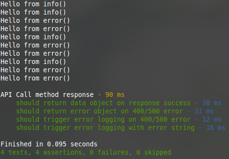
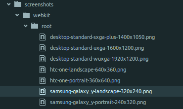
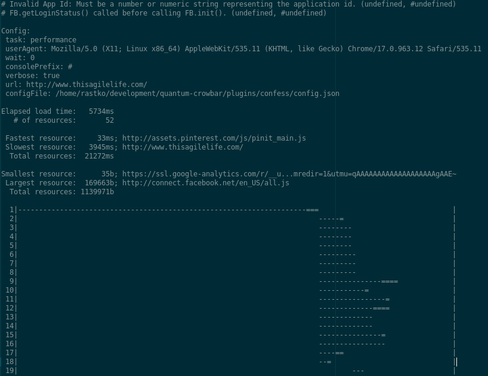

Automated testing
TDD
All automated tests are Unit tests
Wrong
- Unit tests
- Integration tests
- Acceptance tests (aka functional tests)
Let's talk concepts
Jasmine for node.js
jasmine-node
describe('API Call method response', function () {
it ('should return data object on response success', function (done) {
});
it ('should return error object on 400/500 error', function (done) {
});
it ('should trigger error logging on 400/500 error', function (done) {
});
it ('should trigger error logging with error string', function (done) {
});
});
Nock.js
nock
It is like The Truman Show for network requests
nock(options.host) // 'http://www.fake-api.com'
.get(options.path) // '/fake-route'
.reply(200, '{"dataPassed": true}')
.get(options.path)
.reply(400, 'error')
.get(options.path)
.reply(418, {
'error': 'I am a teapot'
})
.get(options.path)
.reply(500, {
'error' : 'There was internal server error'
});
Be particular.
it ('should return data object on response success', function (done) {
apiCall(options, function (err, response) {
expect(JSON.parse(response).dataPassed).toBe(true);
done();
});
});
it ('should return error object on 400/500 error', function (done) {
apiCall(options, function (err, response) {
expect(err.output).toBe('error');
done();
});
});
it ('should trigger error logging on 400/500 error', function (done) {
apiCall(options, function (err, response) {
expect(quantum.logger.info).toHaveBeenCalled();
done();
});
});
it ('should trigger error logging with error string', function (done) {
apiCall(options, function (err, response) {
expect(quantum.logger.error).toHaveBeenCalledWith('Error happened');
done();
});logger.info = jasmine.createSpy("info() spy").andCallFake(function() {
console.log("Hello from info()");
return;
});
logger.error = jasmine.createSpy("error() spy").andCallFake(function() {
console.log("Hello from error()");
return;
});should pre-set global ns first ofc
var apiCall = function(options, callback, write) {
logger.info('API request to ' + url.format(options));
// setup protocol based on passed parameters
var protocol = (options.port && options.port === '443') ? https : http;
try {.on('end', function() {
// Build specific code handling here
if (res.statusCode >= 400 && res.statusCode <= 500 ) {
var errorObject = {
statusCode : res.statusCode,
error: 'API error happened',
output: responseString
};
logger.error('Error happened');
logger.error(errorObject);
callback(errorObject, null);
} else {
logger.info('Request successful');
callback(null, responseString);
}
So...

Now to test integration
Replace stubs/mocks...
global.quantum.logger.info = jasmine.createSpy("info() spy")
.andCallFake(function() {
console.log("Hello from info()");
return;
});
global.quantum.logger.error = jasmine.createSpy("error() spy")
.andCallFake(function() {
console.log("Hello from error()");
return;
});
With real stuff...
global.quantum = {};
global.quantum.logger = require('../../app/plugins/logger.js');
var logger = global.quantum.logger;
var apiCall = require('../../app/plugins/apiCall.js');
Simple spies
it ('should trigger error logging on 400/500 error', function (done) {
spyOn(logger, "info").andCallThrough();
apiCall(options, function (err, response) {
expect(quantum.logger.info).toHaveBeenCalled();
done();
});
});
Real life stuff put to test

of units and systems
Acceptance testing


what do we automate?
Something that absolutely defines working state
smoke tests/ bubble tests / sniff tests
casper.start('www.mysite.com/login', function (){
this.fill('form[name="login"]', {
username: 'rastko.vukasinovic@gmail.com',
password: 'smt123'
}, true);
});
casper.then(function() {
if(this.exists('.HeaderWrapper')) {
this.echo('Login success - header rendered');
//or any other code we want to trigger here
}
casper.then(function() {
if(this.exists('.ContentWrapper')) {
this.echo('Login success - content rendered');
//or any other code we want to trigger here
}
casper.then(function() {
if(this.exists('footer')) {
this.echo('Login success - footer rendered');
//or any other code we want to trigger here
}
});casper.start(config.login.addr, function (){
this.fill(config.login.form, config.login.creds, true);
});
casper.each(config.pages, function(casper, page) {
this.echo('Starting test for ' + config.host + page.name);
casper.each(config.viewports, function(casper, viewport) {
var options = {
viewport: viewport,
link : address + page.link,
name : page.name
};
takeScreenshot(options, this);
});
});
casper.run();var snap = function(options, casperContext) {
var viewport = options.viewport;
var name = options.name;
var link = options.link;
var prefix = options.prefix || '';
// For page screenshot to be accurate we might want to wait for async loaded images to load
var waitTime = options.wait || 1000;
var snapsFolder = options.folder || 'screenshots/';
casperContext.then(function() {
this.viewport(viewport.viewport.width, viewport.viewport.height);
});
casperContext.thenOpen( link, function() {
this.wait(waitTime);
});
casperContext.then(function() {
this.echo(viewport.name + ' (' + viewport.viewport.width + 'x' + viewport.viewport.height + ')', 'info');
this.capture(snapsFolder + prefix + name + '/' + viewport.name + '-' + viewport.viewport.width + 'x' + viewport.viewport.height + '.png', {
top: 0,
left: 0,
width: viewport.viewport.width,
height: viewport.viewport.height
});turns this

into this

Performance analysis/testing
- yslow
- cache analisys
- ttfb/resource analysis




Running stuff
var yslowArgs = [
yslowPath,
'-i',
'grade',
'-threshold',
'"B"',
'-f',
'tap',
pageLink
]; console.log("\nGenerating yslow report for:".bold);
console.log(page.name.yellow + "\n");
var yslowTask = runPhantomChildProcess(yslowArgs);
// Detaching child process event loop from parents event loop
yslowTask.unref();
yslowTask.stdout.on('data', function(data) {
toFile(reportFile + '-yslow.tap', data.toString());
});
unboxing
var runPhantomChildProcess = function(args) {
var phantomProc = childProcess.execFile(phantomPath, args, function(err, stdout, stderr) {
if (err) {
console.log("Error happend".red);
} else {
console.log("Successfully finished".green);
}
});
return phantomProc;
};var toFile = function(path, text) {
// If we are in the PhantomJS this case is quite simple
if (fs.isFile) {
if( fs.isFile(path) ) {
fs.write(path, text, "a");
} else {
fs.write(path, text, "w");
}
} else {
Coming back to smoke test example:
casper.then(function() {
if(this.exists('.HeaderWrapper')) {
this.echo('Login success - header rendered');
//or any other code we want to trigger here
}
casper.then(function() {
if(this.exists('.ContentWrapper')) {
this.echo('Login success - content rendered');
//or any other code we want to trigger here
}
casper.then(function() {
if(this.exists('footer')) {
this.echo('Login success - footer rendered');
//or any other code we want to trigger here
}
});
1..3
ok 1 - Header rendered
not ok 2 - Content rendered
ok 3 - footer rendered
can easily be written in tap form or JUnit form, or...
1..24
not ok 1 C (78) overall score
not ok 2 F (12) ynumreq: Make fewer HTTP requests
---
message: This page has 19 external Javascript scripts. Try combining them into one.
This page has 8 external stylesheets. Try combining them into one.
...
not ok 3 F (0) ycdn: Use a Content Delivery Network (CDN)
---
message: There are 43 static components that are not on CDN. You can specify CDN hostnames in your preferences. See YSlow FAQ for details.
offenders:
- "www.thisagilelife.com: 27 components, 457.4K (300.7K GZip)"
- "assets.pinterest.com: 1 component, 45.8K (45.8K GZip)"
- "ajax.googleapis.com: 2 components, 113.4K (113.4K GZip)"
- "www.feedburner.com: 1 component, 1.4K"
- "1.gravatar.com: 2 components, 2.0K"
...
ok 4 A (100) yemptysrc: Avoid empty src or href
not ok 5 F (0) yexpires: Add Expires headers
---
message: There are 45 static components without a far-future expiration date.
offenders:
- "http://www.thisagilelife.com/wp-includes/js/mediaelement/wp-mediaelement.css?ver=4.2.2"
- "http://www.thisagilelife.com/wp-content/themes/eleven40/style.css?ver=2.1.2
- "http://fonts.googleapis.com/css?family=Oswald"
=============================================================================